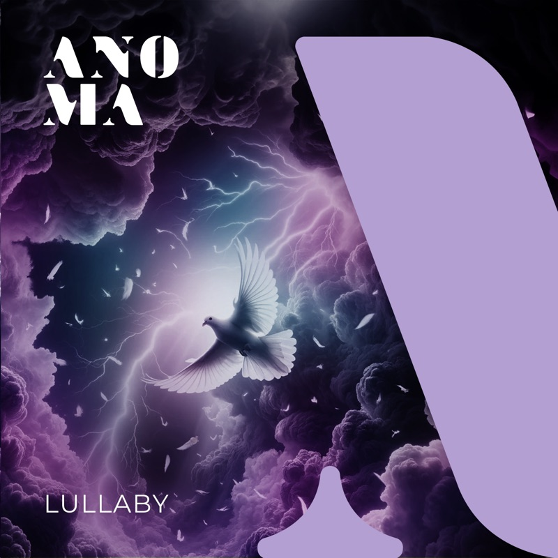
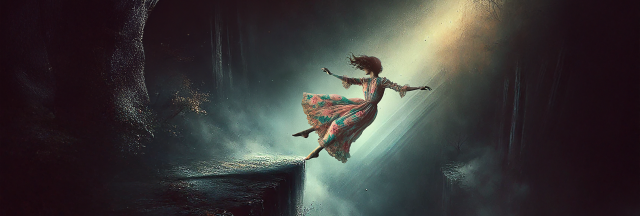
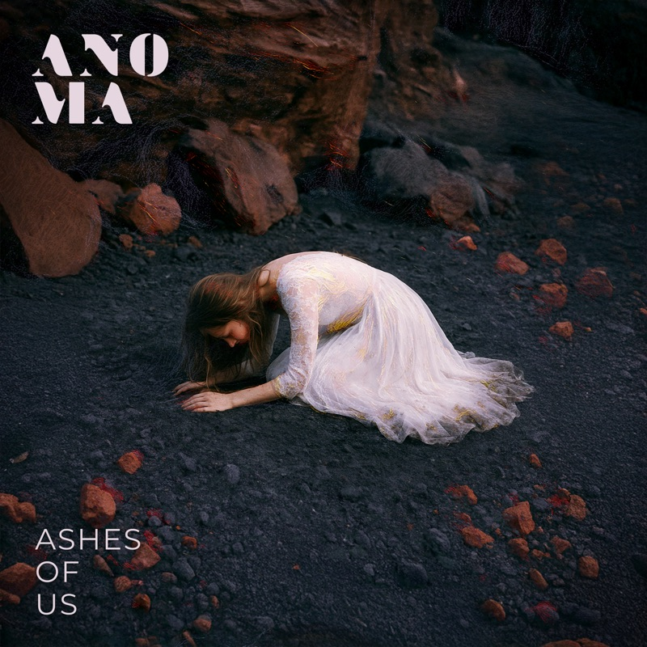
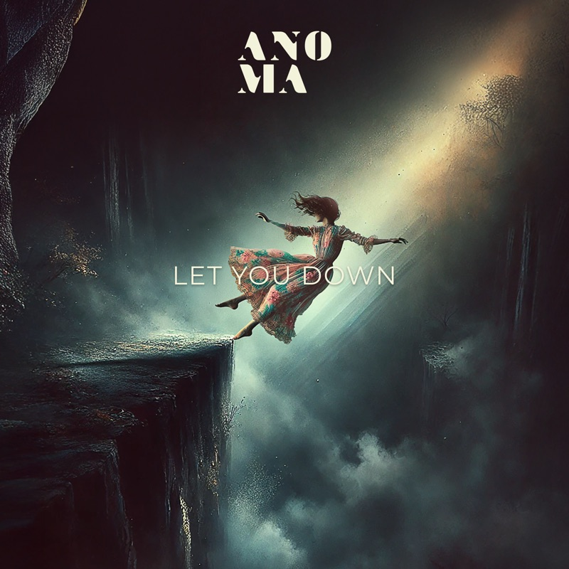
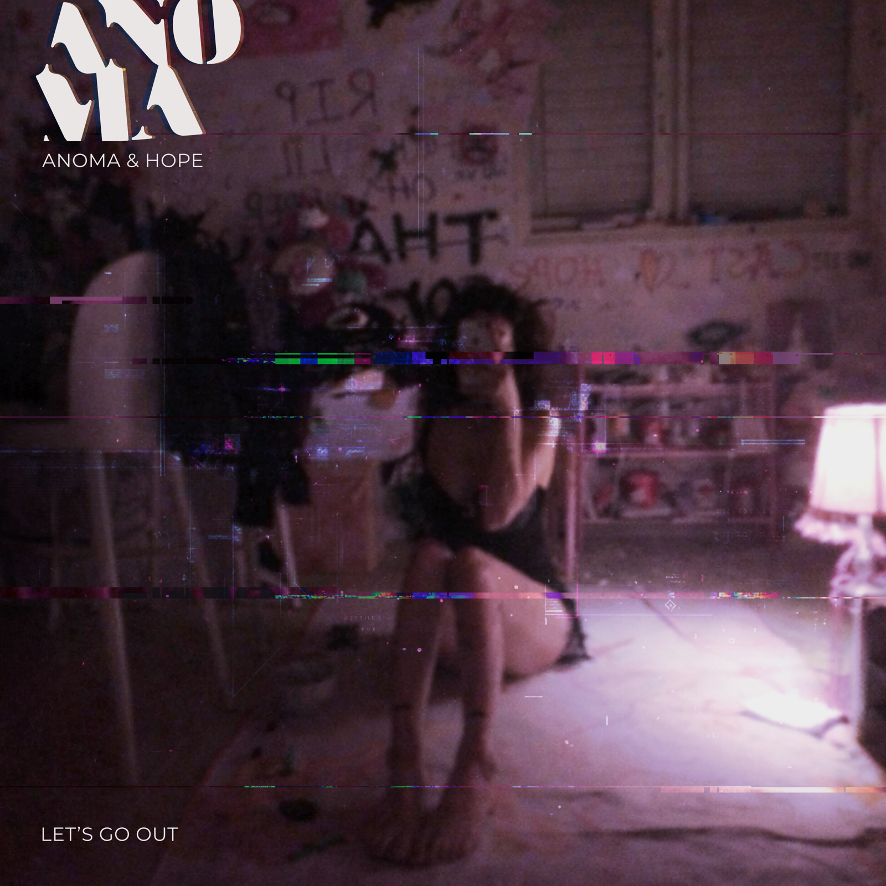
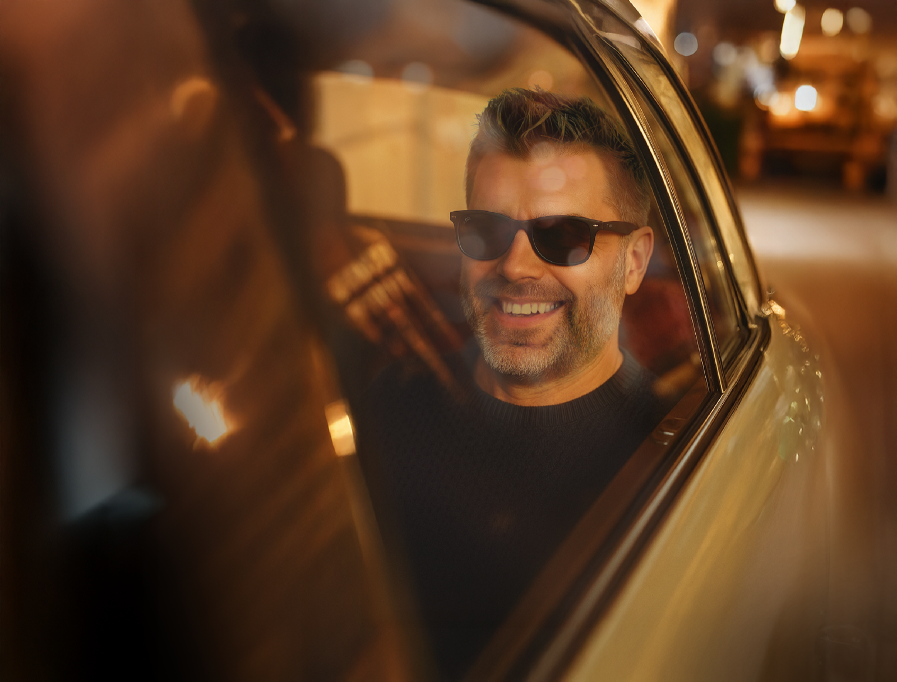
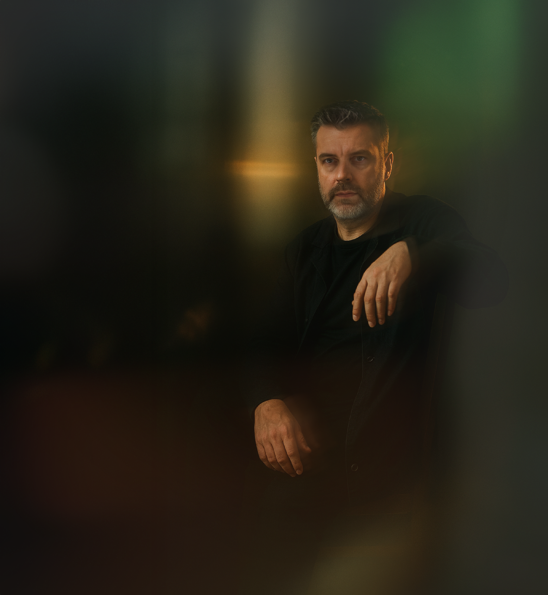
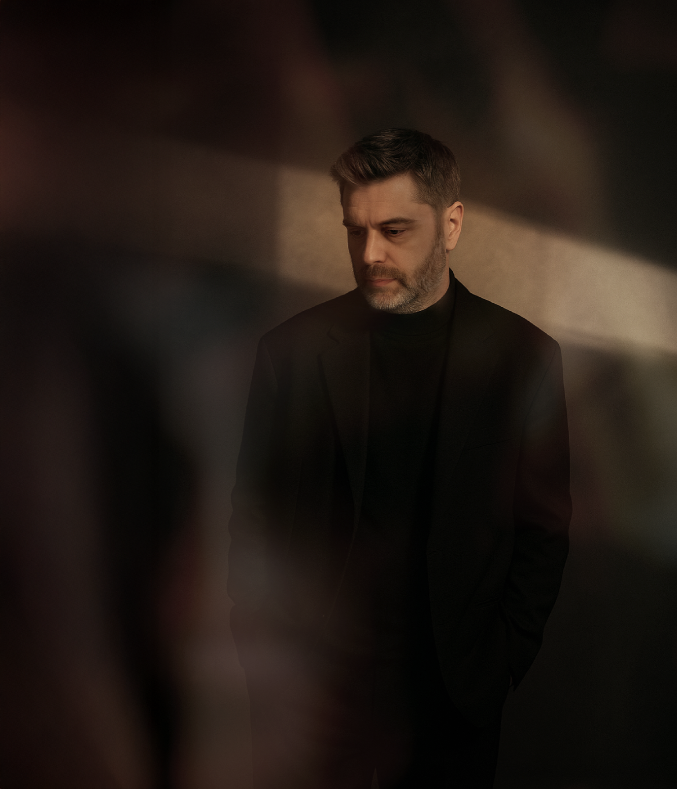
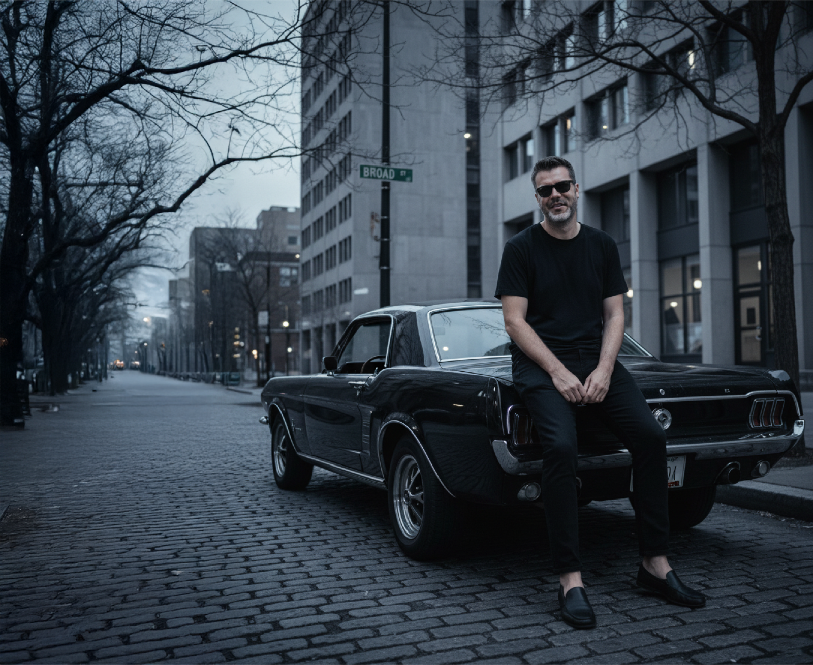

01
Vocal-centered and intimate, where Ukrainian-rooted emotion meets cinematic electronic atmosphere.
Rhythm unveils
the mystery.
Where ancient voices meet the pulse of modern electronic music.
01 | ABOUT
ANOMA is an electronic music project by an independent producer blending ethnic vocals, folk instruments, and modern rhythms across deep house, breakbeat, and drum & bass. Rooted in Ukrainian cultural elements and shaped by life between Ukraine and Israel, ANOMA explores the meeting point between ancestral voices, emotional storytelling, and future-facing electronic production.

02 | FEATURED MUSIC
Different emotions and textures, connected by a shared pulse. Each track reveals another side of ANOMA’s musical world.

Vocal-centered and intimate, where Ukrainian-rooted emotion meets cinematic electronic atmosphere.
Melodic electronic songwriting for a first contact with ANOMA’s softer, more accessible side.

A darker emotional cut about memory and aftermath, shaped by restrained electronic tension.

A direct, song-led electronic track balancing vulnerability with a clear contemporary pulse.
03 | LATEST RELEASE
A vulnerable late-night confession wrapped in modern electronic production. This track captures the fragile space between love and fear, when two people want to hold on, but don’t know if they can.
Glitchy production blended with liquid DnB rhythms, rolling breakbeats, deep sub-bass, syncopated percussion, airy pads, shimmering synths and granular textures.

ANOMA EXISTS IN THE SPACE
BETWEEN
Traditional voices and folk-rooted sounds can be carried into modern electronic music, reshaped by bass, rhythm, texture, and atmosphere.
04 | VISUAL ASSETS




05 | FACTS
06 | CONTACT
For press, playlist submissions, collaborations, and licensing inquiries.
anoma.muz@gmail.com